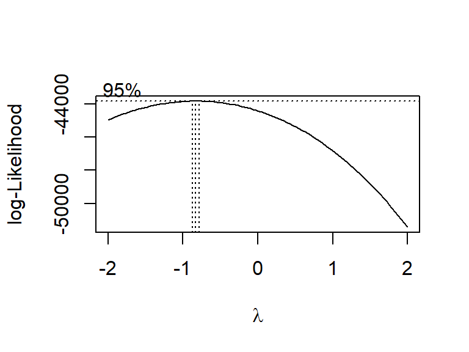
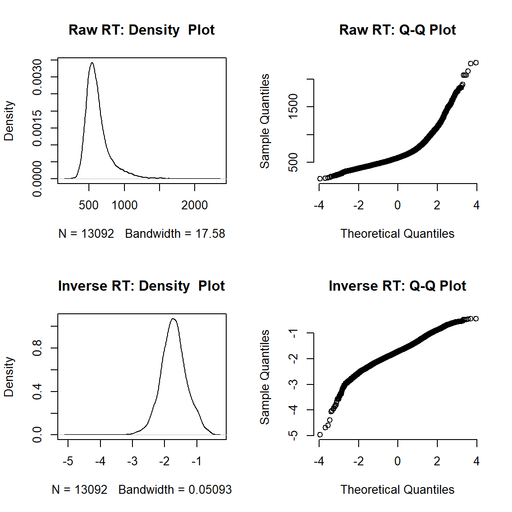

# Load data
load(file = "./data/Single_Trial_Data.rda")
# For word categorization analysis, exclude missing responses, responses with wrong key, and RT outliers
single_trial_data_priming <- single_trial_data %>%
dplyr::filter(
gng_response_type != "miss" &
gng_response_type != "wrong_key" &
word_accuracy != "miss" &
word_accuracy != "wrong_key" &
(is.na(gng_rt_invalid) | gng_rt_invalid == FALSE) &
(is.na(word_rt_outlier) | word_rt_outlier == FALSE)
) # (14130 of 15480 trials left)
# Create numeric word accuracy variable (1 = correct, 0 = incorrect)
single_trial_data_priming <- single_trial_data_priming %>%
dplyr::mutate(word_accuracy_numeric = ifelse(word_accuracy == "correct", 1, 0))
# Make categorical variables factors
single_trial_data_priming$gng_response_type <- factor(single_trial_data_priming$gng_response_type, levels = c("SH", "FH", "FA", "IR"))
single_trial_data_priming$word_valence <- factor(single_trial_data_priming$word_valence)
single_trial_data_priming$participant_id <- factor(single_trial_data_priming$participant_id)Trials were excluded from all analyses if RT in the go/no-go task was shorter than 100 ms or longer than 700 ms, or if the word categorization RT was more than three median absolute deviations (Leys et al., 2013) above or below a participant’s median RT computed per condition. We further discarded trials in which responses in the go/no-go task were missing or performed with one of the word categorization keys. In the analysis of word categorization RT, only trials with correct word categorization responses were considered. In the analysis of word categorization accuracy, trials with correct or incorrect word categorization were included, but not trials with missing categorization responses or responses performed with the key to be pressed to go stimuli.
# Calculate percentage of excluded trials
excluded_trials <- single_trial_data %>%
group_by(participant_id) %>%
dplyr::summarize(
below_100_ms = sum(!is.na(gng_rt_invalid) & gng_rt_invalid != FALSE & gng_rt < 100) / length(participant_id) * 100,
above_700_ms = sum(!is.na(gng_rt_invalid) & gng_rt_invalid != FALSE & gng_rt > 700) / length(participant_id) * 100,
gng_misses = sum(gng_response_type == "miss") / length(participant_id) * 100,
gng_wrong_key = sum(gng_response_type == "wrong_key") / length(participant_id) * 100,
outlier_pos = sum(!is.na(word_rt_outlier) & word_rt_outlier != FALSE & word_valence == "pos") / length(participant_id) * 100,
outlier_neg = sum(!is.na(word_rt_outlier) & word_rt_outlier != FALSE & word_valence == "neg") / length(participant_id) * 100,
word_misses = sum(word_accuracy == "miss") / length(participant_id) * 100,
word_wrong_key = sum(word_accuracy == "wrong_key") / length(participant_id) * 100
) %>%
# Calculate M and SD of the variables
dplyr::summarise_each(list(mean,sd), -participant_id)
# Create dataframe with rows for M and SD for display
table_excluded_trials <- as.data.frame(rbind(as.numeric(excluded_trials[,c(1:8)]), # M
as.numeric(excluded_trials[,c(9:16)])), # SD
row.names = c("M", "SD"))
# Display percentage of excluded trials
my_table_template(table_excluded_trials,
caption = "Excluded Trials (in %)", row_names = TRUE,
col_names = c("< 100 ms", "> 700 ms", "Misses", "Wrong key", "Outlier pos", "Outlier neg", "Misses", "Wrong key"),
header_above_config = c(" " = 1, "Go/no-go trials" = 4, "Word categorization trials" = 4)
)| < 100 ms | > 700 ms | Misses | Wrong key | Outlier pos | Outlier neg | Misses | Wrong key | |
|---|---|---|---|---|---|---|---|---|
| M | 0.41 | 1.12 | 1.01 | 0.18 | 2.89 | 3.40 | 0.13 | 0.11 |
| SD | 0.47 | 2.17 | 1.55 | 0.19 | 1.12 | 1.56 | 0.25 | 0.23 |
This table corresponds to Table S2 in the supplemental material.
# Calculate descriptive statistics for RT per condition
descriptive_statistics_rt <- summarySEwithinO(
data = single_trial_data_priming[single_trial_data_priming$word_accuracy == "correct", ],
measurevar = "word_rt",
withinvars = c("gng_response_type", "word_valence"),
idvar = "participant_id",
conf.interval = .95
) %>%
# Reorder factor levels for plot
dplyr::mutate(
gng_response_type = factor(gng_response_type, levels = c("SH", "FH", "FA", "IR")),
word_valence = factor(word_valence, levels = c("pos", "neg"))
)
# Calculate descriptive statistics for accuracy per condition
descriptive_statistics_accuracy <- summarySEwithinO(
data = single_trial_data_priming,
measurevar = "word_accuracy_numeric",
withinvars = c("gng_response_type", "word_valence"),
idvar = "participant_id",
conf.interval = .95
) %>%
# Multiply numeric values by 100 to obtain values in percent
dplyr::mutate_if(is.numeric, list(~ . * 100)) %>%
# Reorder factor levels for plot
dplyr::mutate(
gng_response_type = factor(gng_response_type, levels = c("SH", "FH", "FA", "IR")),
word_valence = factor(word_valence, levels = c("pos", "neg"))
)
# Make a nice merged table for display
descriptive_statistics <- full_join(descriptive_statistics_rt, descriptive_statistics_accuracy,
by = c("gng_response_type", "word_valence")
) %>%
# Round numeric values to two decimals
dplyr::mutate_if(is.numeric, round, digits = 2) %>%
# Format confidence interval column
dplyr::mutate(
ci_rt = paste0("[", word_rt - ci.x, ", ", word_rt + ci.x, "]"),
ci_accuracy = paste0("[", word_accuracy_numeric - ci.y, ", ", word_accuracy_numeric + ci.y, "]")
) %>%
# Select columns to be displayed
dplyr::select(c("gng_response_type", "word_valence", "word_rt", "ci_rt", "word_accuracy_numeric", "ci_accuracy"))
# Display descriptive statistics for RT and accuracy (and rearrange order of rows)
my_table_template(descriptive_statistics[c(8, 7, 4, 3, 2, 1, 6, 5), ],
caption = "Word Categorization Behavioral Performance",
col_names = c("Preceding response type", "Word valence", "M", "95% CI", "M", "95% CI"),
header_above_config = c(" " = 2, "RT (ms)" = 2, "Accuracy (%)" = 2),
footnote_config = c(general = "Confidence intervals are adjusted for within-participant designs as described by Morey (2008).")
)| Preceding response type | Word valence | M | 95% CI | M | 95% CI |
|---|---|---|---|---|---|
| SH | pos | 578.80 | [573.67, 583.93] | 94.33 | [93.43, 95.23] |
| SH | neg | 602.56 | [597.68, 607.44] | 93.07 | [92.11, 94.03] |
| FH | pos | 569.23 | [563.59, 574.87] | 94.14 | [93.02, 95.26] |
| FH | neg | 608.13 | [602.44, 613.82] | 92.93 | [91.74, 94.12] |
| FA | pos | 743.48 | [723.92, 763.04] | 72.37 | [69.17, 75.57] |
| FA | neg | 635.50 | [621.86, 649.14] | 90.71 | [88.63, 92.79] |
| IR | pos | 698.40 | [688.98, 707.82] | 94.69 | [93.53, 95.85] |
| IR | neg | 689.33 | [680.76, 697.9] | 96.13 | [95.11, 97.15] |
| Note: | |||||
| Confidence intervals are adjusted for within-participant designs as described by Morey (2008). |
This figure corresponds to Figure 2 in the manuscript.
# Create plot RT
plot_rt <- ggplot(descriptive_statistics_rt,
aes(x = gng_response_type, y = word_rt, fill = word_valence)) +
geom_bar(stat = "identity", position = position_dodge(), colour = "black", size = 0.25) +
geom_errorbar(aes(ymax = word_rt + ci, ymin = word_rt - ci),
position = position_dodge(width = 0.9), width = 0.2, size = 0.3) +
my_figure_theme +
labs(x = "Preceding Response Type", y = "RT (ms)") +
coord_cartesian(ylim = c(400, 800)) +
scale_y_continuous(expand = c(0, 0)) +
scale_fill_manual(values = my_figure_colors, name = "Word Valence", labels = c("Pos", "Neg")) +
geom_signif(
y_position = c(785, 785, 785), xmin = c(0.75, 1.75, 2.75), xmax = c(1.25, 2.25, 3.25),
annotation = c("**", "***", "***"), tip_length = 0.01, vjust = 0.5, textsize = 4, size = 0.3
)
# Create plot accuracy
plot_accuracy <- ggplot(descriptive_statistics_accuracy,
aes(x = gng_response_type, y = word_accuracy_numeric, fill = word_valence)) +
geom_bar(stat = "identity", position = position_dodge(), colour = "black", size = 0.25) +
geom_errorbar(aes(ymax = word_accuracy_numeric + ci, ymin = word_accuracy_numeric - ci),
position = position_dodge(width = 0.9), width = 0.2, size = 0.3) +
my_figure_theme +
labs(x = "Preceding Response Type", y = "Accuracy (%)") +
coord_cartesian(ylim = c(50, 100)) +
scale_y_continuous(expand = c(0, 0)) +
scale_fill_manual(values = my_figure_colors, name = "Word Valence", labels = c("Pos", "Neg")) +
geom_signif(
y_position = c(98.2), xmin = c(2.775), xmax = c(3.225),
annotation = c("***"), tip_length = 0.01, vjust = 0.5, textsize = 4, size = 0.3
)
# Create common legend for plots (function from http://www.sthda.com/english/wiki/wiki.php?id_contents=7930#add-a-common-legend-for-multiple-ggplot2-graphs)
get_legend <- function(myggplot) {
tmp <- ggplot_gtable(ggplot_build(myggplot))
leg <- which(sapply(tmp$grobs, function(x) x$name) == "guide-box")
legend <- tmp$grobs[[leg]]
return(legend)
}
legend <- get_legend(plot_rt)
# Remove previous legends from plots
plot_rt <- plot_rt + theme(legend.position = "none")
plot_accuracy <- plot_accuracy + theme(legend.position = "none")
# Arrange plots
figure_priming_behav <- ggdraw() +
draw_plot(plot_rt, x = 0, y = .2, width = .5, height = 0.7) +
draw_plot(plot_accuracy, x = .5, y = .2, width = .5, height = 0.7) +
draw_plot(legend, x = 0.25, y = 0.1, width = .5, height = 0) +
draw_plot_label(c("A", "B"), c(0, 0.5), c(1, 1), size = 15)
# Save plot
# ggsave("figure_priming_behav.tiff",width = 16, height = 10 , units = "cm", dpi=600, compression = "lzw")
# Display plot
figure_priming_behavNote. (A) RT and (B) accuracy in the word categorization task are shown as a function of preceding response type and word valence. Error bars represent 95% confidence intervals adjusted for within-participant designs as described by Morey (2008). Asterisks refer to significant differences based on linear mixed-effects model analysis.
To obtain a sufficient number of false alarms in the go/no-go task, an individually calibrated RT limit was used. The individual RT limit was calculated in calibration blocks. Participants completed three calibration blocks that were each followed by two experimental blocks. For the first two experimental blocks, the RT limit was set to 80% of the participant’s mean RT for correct responses in the preceding calibration block. For the subsequent experimental blocks, the RT limit was set to 90% of the mean RT in the preceding calibration block.
# Calculate FH time
FH_time <- single_trial_data_priming %>%
dplyr::filter(gng_response_type == "FH" | gng_response_type == "SH") %>%
group_by(participant_id) %>%
dplyr::summarize(
FH_1 = mean(gng_rt[trial <= 28]) - (mean(gng_rt[trial <= 28]) * 20) / 100,
FH_2 = mean(gng_rt[trial >= 173 & trial <= 200]) - (mean(gng_rt[trial >= 173 & trial <= 200]) * 10) / 100,
FH_3 = mean(gng_rt[trial >= 345 & trial <= 372]) - (mean(gng_rt[trial >= 345 & trial <= 372]) * 10) / 100
)
FH_time_mean <- round((mean(FH_time$FH_1) + mean(FH_time$FH_2) + mean(FH_time$FH_3)) / 3, digits = 2)
FH_time_sd <- round((sd(FH_time$FH_1) + sd(FH_time$FH_2) + sd(FH_time$FH_3)) / 3, digits = 2)FH time: M = 280.78 ms, SD = 40.92 ms
To evaluate whether word categorization was faster and more accurate for words that were affectively congruent to the preceding action in the go/no-go task, word categorization RT and accuracy were modeled using a linear mixed-effects model (LMM) and a binomial generalized linear mixed-effects model (GLMM), respectively. In both models, response type of the preceding go/no-go response (slow hit, fast hit, false alarm, inhibited response) and word valence (positive, negative) were specified as fixed factors and participants and word stimuli as random factors.
Fixed effects were coded using sliding difference contrasts, such that the intercept reflects the grand mean across all conditions and differences in means of adjacent factor levels (e.g., false alarm minus fast hit) are tested. The random-effects structure for each model was determined based on the procedure proposed by Bates, Kliegl, et al. (2015). We started with the maximal random-effects structure, including random intercepts for participants and word stimuli, as well as random slopes for all fixed factors and their interactions. If the model with the maximal random-effects structure would not converge, correlations of the random terms were set to zero. We performed a principal components analysis on the random-effects variance–covariance estimates to determine the number of components supported by the data and removed random effects explaining zero variance to prevent overparametrization (Matuschek et al., 2017).
# Define contrasts (sliding difference contrasts)
contrasts(single_trial_data_priming$gng_response_type) <- contr.sdif(4)
contrasts(single_trial_data_priming$word_valence) <- contr.sdif(2)
# Add contrasts as numerical covariates via model matrix*
model_matrix <- model.matrix(~ gng_response_type * word_valence, single_trial_data_priming)
# Attach the model matrix (8 columns) to the dataframe
single_trial_data_priming[, (ncol(single_trial_data_priming) + 1):(ncol(single_trial_data_priming) + 8)] <- model_matrix
# Assign descriptive names to the contrasts
names(single_trial_data_priming)[(ncol(single_trial_data_priming) - 7):ncol(single_trial_data_priming)] <- c(
"Grand Mean", "FH_SH", "FA_FH", "IR_FA", "pos_neg", "FH_SH:pos_neg", "FA_FH:pos_neg", "IR_FA:pos_neg"
)
# *Note: For the random effects, we needed to enter the separate random effect terms in the models to enable
# double-bar notation (||). This allows fitting a model that sets correlations of the random terms to zero.LMM analysis of word categorization RT was conducted on inverse-transformed RT values to meet the assumption of normally distributed residuals. The appropriate transformation was determined using the Box–Cox procedure (Box & Cox, 1964).
# Determine transformation of the dependent variable (RT) by estimating optimal lambda using Box–Cox procedure
bc <- boxcox(word_rt ~ 1, data = single_trial_data_priming[single_trial_data_priming$word_accuracy == "correct", ])
optlambda <- bc$x[which.max(bc$y)]The optimal lambda was -0.83, suggesting that inverse transformation is most appropriate.
# Density plot and q-q plot for raw RT values
par(mfrow = c(2, 2)) # arrange plots
plot(density(single_trial_data_priming[single_trial_data_priming$word_accuracy == "correct", ]$word_rt),
main = "Raw RT: Density Plot"
)
qqnorm(single_trial_data_priming[single_trial_data_priming$word_accuracy == "correct", ]$word_rt,
main = "Raw RT: Q-Q Plot", pch = 1, frame = FALSE
)
# Density plot and q-q plot for inverse-transformed RT values
plot(density(single_trial_data_priming[single_trial_data_priming$word_accuracy == "correct", ]$word_rt_inverse),
main = "Inverse RT: Density Plot"
)
qqnorm(single_trial_data_priming[single_trial_data_priming$word_accuracy == "correct", ]$word_rt_inverse,
main = "Inverse RT: Q-Q Plot", pch = 1, frame = FALSE
)
par(mfrow = c(1, 1)) # reset layoutWe additionally performed a parallel analysis on untransformed (i.e., raw) RTs using a GLMM in which RT data were modeled with an identity link function and an inverse Gaussian distribution. This procedure was recommended by Lo and Andrews (2015), as nonlinear data transformations may systematically alter patterns of interaction effects (Balota et al., 2013).
#### 1) Run model with maximal random-effects structure
LMM_rt_max <- lmer(word_rt_inverse ~ gng_response_type * word_valence +
(1 + FH_SH + FA_FH + IR_FA + pos_neg + FH_SH:pos_neg + FA_FH:pos_neg + IR_FA:pos_neg | participant_id) +
(1 + FH_SH + FA_FH + IR_FA | word),
data = single_trial_data_priming[single_trial_data_priming$word_accuracy == "correct", ],
REML = FALSE,
control = lmerControl(optimizer = "bobyqa")
)
# Check model output
summary(LMM_rt_max) # Singular fit
#### 2) Run zero-correlation parameter model by using || syntax to reduce model complexity
LMM_rt_red1 <- lmer(word_rt_inverse ~ gng_response_type * word_valence +
(1 + FH_SH + FA_FH + IR_FA + pos_neg + FH_SH:pos_neg + FA_FH:pos_neg + IR_FA:pos_neg || participant_id) +
(1 + FH_SH + FA_FH + IR_FA || word),
data = single_trial_data_priming[single_trial_data_priming$word_accuracy == "correct", ],
REML = FALSE,
control = lmerControl(optimizer = "bobyqa")
)
# Check model output
summary(LMM_rt_red1) # Singular fit
# Check PCA of random-effects variance-covariance estimates
summary(rePCA(LMM_rt_red1)) # For word stimuli there is one term that does not explain variance (< 0.5%)
# Check which random effect explains near zero variance
print(VarCorr(LMM_rt_red1), comp = "Variance") # It is IR - FA for word stimuliAs the model with the maximal random-effects structure did not converge, correlation parameters between random terms were set to zero. One random effect (IR − FA for word stimuli) explaining zero variance was removed to prevent overparametrization.
#### 1) Run model with maximal random-effects structure
GLMM_rt_max <- glmer(word_rt ~ gng_response_type * word_valence +
(1 + FH_SH + FA_FH + IR_FA + pos_neg + FH_SH:pos_neg + FA_FH:pos_neg + IR_FA:pos_neg | participant_id) +
(1 + FH_SH + FA_FH + IR_FA | word),
data = single_trial_data_priming[single_trial_data_priming$word_accuracy == "correct", ],
family = inverse.gaussian(link = "identity"),
control = glmerControl(optimizer = "bobyqa")
)
# Check model output
summary(GLMM_rt_max) # Model does not converge
#### 2) Run zero-correlation parameter model by using || syntax to reduce model complexity
GLMM_rt_red1 <- glmer(word_rt ~ gng_response_type * word_valence +
(1 + FH_SH + FA_FH + IR_FA + pos_neg + FH_SH:pos_neg + FA_FH:pos_neg + IR_FA:pos_neg || participant_id) +
(1 + FH_SH + FA_FH + IR_FA || word),
data = single_trial_data_priming[single_trial_data_priming$word_accuracy == "correct", ],
family = inverse.gaussian(link = "identity"),
control = glmerControl(optimizer = "bobyqa", optCtrl = list(maxfun = 2e6))
)
# Check model output
summary(GLMM_rt_red1) # Model does not converge
# Check PCA of random-effects variance-covariance estimates
summary(rePCA(GLMM_rt_red1)) # All terms explain variance
# Check which random effect explains least variance
print(VarCorr(GLMM_rt_red1), comp = "Variance") # It is FA - FH for word stimuliAs the model with the maximal random-effects structure did not converge, correlation parameters between random terms were set to zero. One random effect (FA − FH for word stimuli) explaining the least variance was removed to achieve convergence.
This table corresponds to Table 2 in the manuscript.
#### 3) Run final model without random terms explaining zero variance (i.e., remove IR_FA for word stimuli)
LMM_rt_final <- lmer(word_rt_inverse ~ gng_response_type * word_valence +
(1 + FH_SH + FA_FH + IR_FA + pos_neg + FH_SH:pos_neg + FA_FH:pos_neg + IR_FA:pos_neg || participant_id) +
(1 + FH_SH + FA_FH || word),
data = single_trial_data_priming[single_trial_data_priming$word_accuracy == "correct", ],
REML = TRUE,
control = lmerControl(optimizer = "bobyqa")
)
# Check model output
# summary(LMM_rt_final) # Model does converge, no singular fit
# Re-check PCA of random-effects variance-covariance estimates
# summary(rePCA(LMM_rt_final)) # All terms explain variance
# Display results (fixed effects)
tab_model(LMM_rt_final,
dv.labels = "RT", pred.labels = labels, show.stat = TRUE, show.icc = FALSE, show.r2 = FALSE,
show.re.var = FALSE, show.ngroups = FALSE, string.est = "b", string.stat = "t value",
string.ci = "95 % CI", string.p = "p value", p.val = "satterthwaite"
)
# Display random effects
print("Random effects:")
print(VarCorr(LMM_rt_final), digits = 1, comp = "Std.Dev.")| RT | ||||
|---|---|---|---|---|
| Predictors | b | 95 % CI | t value | p value |
| Intercept | -1.68 | -1.77 – -1.59 | -36.38 | <0.001 |
| FH - SH | -0.02 | -0.04 – 0.01 | -1.27 | 0.214 |
| FA - FH | 0.23 | 0.18 – 0.28 | 9.12 | <0.001 |
| IR - FA | 0.02 | -0.04 – 0.07 | 0.63 | 0.536 |
| Pos - Neg | -0.01 | -0.05 – 0.03 | -0.34 | 0.739 |
| FH - SH x Pos - Neg | -0.02 | -0.07 – 0.03 | -0.90 | 0.375 |
| FA - FH x Pos - Neg | 0.34 | 0.27 – 0.40 | 10.14 | <0.001 |
| IR - FA x Pos - Neg | -0.24 | -0.30 – -0.19 | -8.31 | <0.001 |
| Observations | 13092 | |||
[1] "Random effects:"
Groups Name Std.Dev.
word FA_FH 0.01
word.1 FH_SH 0.03
word.2 (Intercept) 0.05
participant_id IR_FA:pos_neg 0.11
participant_id.1 FA_FH:pos_neg 0.14
participant_id.2 FH_SH:pos_neg 0.10
participant_id.3 pos_neg 0.08
participant_id.4 IR_FA 0.14
participant_id.5 FA_FH 0.13
participant_id.6 FH_SH 0.06
participant_id.7 (Intercept) 0.25
Residual 0.30 Analysis of word categorization RT revealed a significant main effect of response type. Following false alarms, participants responded slower to words than following fast hits, suggesting that false alarms were associated with PES.
Crucially, the analysis further yielded the predicted interaction between response type and word valence, which was significant for false alarms compared to fast hits and for inhibited responses compared to false alarms but not for fast hits compared to slow hits. These interactions indicate that the effect of word valence on word categorization RT was different for false alarm trials compared to fast hit trials and to inhibited response trials, respectively.
This table corresponds to Table S3 in the supplemental material.
#### 3) Run final model without random term with least variance to achieve convergence (i.e., remove FA - FH for word stimuli)
GLMM_rt_final <- glmer(word_rt ~ gng_response_type * word_valence +
(1 + FH_SH + FA_FH + IR_FA + pos_neg + FH_SH:pos_neg + FA_FH:pos_neg + IR_FA:pos_neg || participant_id) +
(1 + FH_SH + IR_FA || word),
data = single_trial_data_priming[single_trial_data_priming$word_accuracy == "correct", ],
family = inverse.gaussian(link = "identity"),
control = glmerControl(optimizer = "bobyqa", optCtrl = list(maxfun = 2e6))
)
# Check model output
# summary(GLMM_rt_final) # Model does converge, no singular fit
# Re-check PCA of random-effects variance-covariance estimates
# summary(rePCA(GLMM_rt_final)) # All terms explain variance
# Display results (fixed effects)
tab_model(GLMM_rt_final,
dv.labels = "RT", pred.labels = labels, show.stat = TRUE, show.icc = FALSE, show.r2 = FALSE,
show.re.var = FALSE, show.ngroups = FALSE, string.est = "b", string.stat = "t value",
string.ci = "95 % CI", string.p = "p value"
)
# Display random effects
print("Random effects:")
print(VarCorr(GLMM_rt_final), digits = 1, comp = "Std.Dev.")| RT | ||||
|---|---|---|---|---|
| Predictors | b | 95 % CI | t value | p value |
| Intercept | 749.11 | 725.89 – 772.32 | 63.24 | <0.001 |
| FH - SH | -8.78 | -21.51 – 3.96 | -1.35 | 0.177 |
| FA - FH | 121.14 | 99.99 – 142.29 | 11.23 | <0.001 |
| IR - FA | -4.25 | -30.71 – 22.21 | -0.32 | 0.753 |
| Pos - Neg | 14.79 | -3.29 – 32.87 | 1.60 | 0.109 |
| FH - SH x Pos - Neg | -10.32 | -28.72 – 8.09 | -1.10 | 0.272 |
| FA - FH x Pos - Neg | 136.80 | 119.54 – 154.07 | 15.53 | <0.001 |
| IR - FA x Pos - Neg | -106.35 | -126.62 – -86.07 | -10.28 | <0.001 |
| Observations | 13092 | |||
[1] "Random effects:"
Groups Name Std.Dev.
word IR_FA 11.421
word.1 FH_SH 11.341
word.2 (Intercept) 12.236
participant_id IR_FA:pos_neg 53.087
participant_id.1 FA_FH:pos_neg 48.288
participant_id.2 FH_SH:pos_neg 29.630
participant_id.3 pos_neg 19.006
participant_id.4 IR_FA 41.642
participant_id.5 FA_FH 41.968
participant_id.6 FH_SH 17.535
participant_id.7 (Intercept) 36.253
Residual 0.007 The GLMM analysis yielded the same pattern of results concerning the predicted interaction between response type and word valence as the LMM analysis of inverse-transformed RT data.
We followed up interactions by reparametrizing the fixed-effects part of the model with the effect of word valence nested within each response type. Except for the nesting, the model was specified identically to the non-nested model, therefore yielding identical results in terms of response type main effects and model fit indices.
This table corresponds to Table 2 in the manuscript.
#### 4) Run model with the effect of word valence nested within each response type
LMM_rt_nested <- lmer(word_rt_inverse ~ gng_response_type / word_valence +
(1 + FH_SH + FA_FH + IR_FA + pos_neg + FH_SH:pos_neg + FA_FH:pos_neg + IR_FA:pos_neg || participant_id) +
(1 + FH_SH + FA_FH || word),
data = single_trial_data_priming[single_trial_data_priming$word_accuracy == "correct", ],
REML = TRUE,
control = lmerControl(optimizer = "bobyqa")
)
# Display results (fixed effects)
tab_model(LMM_rt_nested,
dv.labels = "RT", pred.labels = labels, show.stat = TRUE, show.icc = FALSE, show.r2 = FALSE,
show.re.var = FALSE, show.ngroups = FALSE, string.est = "b", string.stat = "t value",
string.ci = "95 % CI", string.p = "p value", p.val = "satterthwaite"
)| RT | ||||
|---|---|---|---|---|
| Predictors | b | 95 % CI | t value | p value |
| Intercept | -1.68 | -1.77 – -1.59 | -36.38 | <0.001 |
| FH - SH | -0.02 | -0.04 – 0.01 | -1.27 | 0.214 |
| FA - FH | 0.23 | 0.18 – 0.28 | 9.12 | <0.001 |
| IR - FA | 0.02 | -0.04 – 0.07 | 0.63 | 0.536 |
| SH: Pos - Neg | -0.10 | -0.16 – -0.04 | -3.35 | 0.001 |
| FH: Pos - Neg | -0.12 | -0.17 – -0.07 | -4.52 | <0.001 |
| FA: Pos - Neg | 0.22 | 0.16 – 0.28 | 7.15 | <0.001 |
| IR: Pos - Neg | -0.03 | -0.09 – 0.03 | -0.87 | 0.388 |
| Observations | 13092 | |||
Following false alarms, participants categorized negative words faster than positive words. Following hits (fast hits and slow hits), participants categorized positive words faster than negative words.
We followed up interactions by reparametrizing the fixed-effects part of the model with the effect of word valence nested within each response type. Except for the nesting, the model was specified identically to the non-nested model, therefore yielding comparable results in terms of response type main effects and model fit indices.
This table corresponds to Table S3 in the supplemental material.
#### 4) Run model with the effect of word valence nested within each response type
GLMM_rt_nested <- glmer(word_rt ~ gng_response_type / word_valence +
(1 + FH_SH + FA_FH + IR_FA + pos_neg + FH_SH:pos_neg + FA_FH:pos_neg + IR_FA:pos_neg || participant_id) +
(1 + FH_SH + IR_FA || word),
data = single_trial_data_priming[single_trial_data_priming$word_accuracy == "correct", ],
family = inverse.gaussian(link = "identity"),
control = glmerControl(optimizer = "bobyqa", optCtrl = list(maxfun = 2e6))
)
# Display results (fixed effects)
tab_model(GLMM_rt_nested,
dv.labels = "RT", pred.labels = labels, show.stat = TRUE, show.icc = FALSE, show.r2 = FALSE,
show.re.var = FALSE, show.ngroups = FALSE, string.est = "b", string.stat = "t value",
string.ci = "95 % CI", string.p = "p value"
)| RT | ||||
|---|---|---|---|---|
| Predictors | b | 95 % CI | t value | p value |
| Intercept | 749.10 | 728.64 – 769.57 | 71.74 | <0.001 |
| FH - SH | -8.78 | -21.65 – 4.09 | -1.34 | 0.181 |
| FA - FH | 121.14 | 93.26 – 149.02 | 8.52 | <0.001 |
| IR - FA | -4.25 | -23.55 – 15.04 | -0.43 | 0.666 |
| SH: Pos - Neg | -19.29 | -40.01 – 1.43 | -1.82 | 0.068 |
| FH: Pos - Neg | -29.60 | -46.41 – -12.79 | -3.45 | 0.001 |
| FA: Pos - Neg | 107.20 | 92.29 – 122.10 | 14.10 | <0.001 |
| IR: Pos - Neg | 0.85 | -13.64 – 15.34 | 0.12 | 0.908 |
| Observations | 13092 | |||
Following false alarms, participants categorized negative words faster than positive words. Following hits (fast hits; slow hits as statistical trend), participants categorized positive words faster than negative words.
The GLMM models the probability of a correct word categorization and estimates reflect log-odds ratios for a correct response.
#### 1) Run model with maximal random-effects structure
GLMM_acc_max <- glmer(word_accuracy_numeric ~ gng_response_type * word_valence +
(1 + FH_SH + FA_FH + IR_FA + pos_neg + FH_SH:pos_neg + FA_FH:pos_neg + IR_FA:pos_neg | participant_id) +
(1 + FH_SH + FA_FH + IR_FA | word),
data = single_trial_data_priming,
family = binomial,
control = glmerControl(optimizer = "bobyqa")
)
# Check model output
summary(GLMM_acc_max) # Model does not converge
#### 2) Run zero-correlation parameter model by using || syntax to reduce model complexity
GLMM_acc_red1 <- glmer(word_accuracy_numeric ~ gng_response_type * word_valence +
(1 + FH_SH + FA_FH + IR_FA + pos_neg + FH_SH:pos_neg + FA_FH:pos_neg + IR_FA:pos_neg || participant_id) +
(1 + FH_SH + FA_FH + IR_FA || word),
data = single_trial_data_priming,
family = binomial,
control = glmerControl(optimizer = "bobyqa")
)
# Check model output
summary(GLMM_acc_red1) # Singular fit
# Check PCA of random-effects variance-covariance estimates
summary(rePCA(GLMM_acc_red1)) # For participants there is one term that does not explain variance (< 0.5%)
# Check which random effect explains near zero variance
print(VarCorr(GLMM_acc_red1), comp = "Variance") # It is FA - FH for participantsAs the model with the maximal random-effects structure did not converge, correlation parameters between random terms were set to zero. One random effect (FA − FH for participants) explaining zero variance was removed to prevent overparametrization.
This table corresponds to Table 2 in the manuscript.
#### 3) Run final model without random terms explaining zero variance (i.e., remove FA_FH for participants)
GLMM_acc_final <- glmer(word_accuracy_numeric ~ gng_response_type * word_valence +
(1 + FH_SH + IR_FA + pos_neg + FH_SH:pos_neg + FA_FH:pos_neg + IR_FA:pos_neg || participant_id) +
(1 + FH_SH + FA_FH + IR_FA || word),
data = single_trial_data_priming,
family = binomial,
control = glmerControl(optimizer = "bobyqa")
)
# Check model output
# summary(GLMM_acc_final) # Model does converge, no singular fit
# Re-check PCA of random-effects variance-covariance estimates
# summary(rePCA(GLMM_acc_final)) # All terms explain variance
# Display results (fixed effects)
tab_model(GLMM_acc_final,
dv.labels = "Accuracy", pred.labels = labels, show.stat = TRUE, show.icc = FALSE,
show.r2 = FALSE, show.re.var = FALSE, show.ngroups = FALSE, string.stat = "z value",
string.ci = "95 % CI", string.p = "p value"
)
# Display random effects
print("Random effects:")
print(VarCorr(GLMM_acc_final), digits = 2, comp = "Std.Dev.")| Accuracy | ||||
|---|---|---|---|---|
| Predictors | Odds Ratios | 95 % CI | z value | p value |
| Intercept | 21.31 | 14.99 – 30.30 | 17.04 | <0.001 |
| FH - SH | 0.95 | 0.78 – 1.16 | -0.49 | 0.623 |
| FA - FH | 0.39 | 0.31 – 0.49 | -8.05 | <0.001 |
| IR - FA | 4.00 | 2.94 – 5.44 | 8.82 | <0.001 |
| Pos - Neg | 0.57 | 0.38 – 0.86 | -2.68 | 0.007 |
| FH - SH x Pos - Neg | 1.05 | 0.69 – 1.59 | 0.21 | 0.834 |
| FA - FH x Pos - Neg | 0.12 | 0.06 – 0.23 | -6.35 | <0.001 |
| IR - FA x Pos - Neg | 4.59 | 2.33 – 9.05 | 4.40 | <0.001 |
| Observations | 14130 | |||
[1] "Random effects:"
Groups Name Std.Dev.
word IR_FA 0.14
word.1 FA_FH 0.13
word.2 FH_SH 0.17
word.3 (Intercept) 0.53
participant_id IR_FA:pos_neg 1.08
participant_id.1 pos_neg:FA_FH 1.20
participant_id.2 FH_SH:pos_neg 0.47
participant_id.3 pos_neg 0.68
participant_id.4 IR_FA 0.38
participant_id.5 FH_SH 0.15
participant_id.6 (Intercept) 0.86 The analysis yielded an interaction between response type and word valence, which was significant for false alarms compared to fast hits and for inhibited responses compared to false alarms. These interactions indicate that the effect of word valence on categorization accuracy was different for false alarm trials compared to fast hit trials and to inhibited response trials, respectively.
We followed up interactions by reparametrizing the fixed-effects part of the model with the effect of word valence nested within each response type. Except for the nesting, the model was specified identically to the non-nested model, therefore yielding identical results in terms of response type main effects and model fit indices.
This table corresponds to Table 2 in the manuscript.
#### 4) Run model with the effect of word valence nested within each response type
GLMM_acc_nested <- glmer(word_accuracy_numeric ~ gng_response_type / word_valence +
(1 + FH_SH + IR_FA + pos_neg + FH_SH:pos_neg + FA_FH:pos_neg + IR_FA:pos_neg || participant_id) +
(1 + FH_SH + FA_FH + IR_FA || word),
data = single_trial_data_priming,
family = binomial,
control = glmerControl(optimizer = "bobyqa")
)
# Display results (fixed effects)
tab_model(GLMM_acc_nested,
dv.labels = "Accuracy", pred.labels = labels, show.stat = TRUE, show.icc = FALSE,
show.r2 = FALSE, show.re.var = FALSE, show.ngroups = FALSE, string.stat = "z value",
string.ci = "95 % CI", string.p = "p value"
)| Accuracy | ||||
|---|---|---|---|---|
| Predictors | Odds Ratios | 95 % CI | z value | p value |
| Intercept | 21.31 | 14.99 – 30.30 | 17.04 | <0.001 |
| FH - SH | 0.95 | 0.78 – 1.16 | -0.49 | 0.623 |
| FA - FH | 0.39 | 0.31 – 0.49 | -8.05 | <0.001 |
| IR - FA | 4.00 | 2.94 – 5.44 | 8.82 | <0.001 |
| SH: Pos - Neg | 1.09 | 0.64 – 1.85 | 0.32 | 0.750 |
| FH: Pos - Neg | 1.14 | 0.67 – 1.94 | 0.48 | 0.630 |
| FA: Pos - Neg | 0.14 | 0.08 – 0.25 | -6.62 | <0.001 |
| IR: Pos - Neg | 0.63 | 0.33 – 1.22 | -1.36 | 0.173 |
| Observations | 14130 | |||
Following false alarms, participants categorized negative words more accurately than positive words.
To facilitate comparison with previously reported results obtained using a similar task and aggregation-based analyses (Aarts et al., 2012, 2013), word categorization RT and accuracy were additionally analyzed with Greenhouse–Geisser corrected repeated-measures analyses of variance (ANOVAs) including the within-participant factors response type (slow hit, fast hit, false alarm, inhibited response) and word valence (positive, negative). As can be seen below, the ANOVAs yielded the same results as obtained with mixed-effects modeling with respect to all main effects, interaction effects, and all pairwise comparisons. This analysis corresponds to page 5 in the supplemental material.
# Due to the afex package, contrasts are automatically set to effect-coding (contr.sum). Afex package
# also checks sphericity assumptions and automatically corrects for any violations if necessary.
# Get data in correct format for ANOVAs (aggregate within participants per condition)
data_anova <- single_trial_data_priming %>%
group_by(participant_id, gng_response_type, word_valence) %>%
dplyr::summarize(
word_rt_inverse = mean(word_rt_inverse[word_accuracy == "correct"]),
percentage_correct_responses = sum(word_accuracy_numeric) / length(participant_id) * 100
)
# ANOVA RT
anova_rt <- aov_ez(
id = "participant_id",
dv = "word_rt_inverse",
data = data_anova,
within = c("gng_response_type", "word_valence")
)
# ANOVA accuracy
anova_accuracy <- aov_ez(
id = "participant_id",
dv = "percentage_correct_responses",
data = data_anova,
within = c("gng_response_type", "word_valence")
)
# Display ANOVA results
knitr::kables(
list(
my_table_template(nice(anova_rt, MSE = FALSE, sig_symbols = rep("", 4)),
header_above_config = c(" " = 1, "RT" = 4)),
my_table_template(nice(anova_accuracy, MSE = FALSE, sig_symbols = rep("", 4))[, c(2:5)],
header_above_config = c("Accuracy" = 4))
),
caption = "ANOVAs"
) %>%
kable_styling(bootstrap_options = c("striped", "condensed"), font_size = 12, full_width = F, position = "left") %>%
footnote(general = "Ges = generalized eta squared, the recommended effect size for repeated-measures designs (Bakeman, 2005).")
|
|
||||||||||||||||||||||||||||||||||||
| Note: | |||||||||||||||||||||||||||||||||||||
| Ges = generalized eta squared, the recommended effect size for repeated-measures designs (Bakeman, 2005). |
Significant main effects and interactions were followed up with two-tailed paired t tests with Holm–Bonferroni p value adjustments.
# Use multivariate model for all follow-up tests to adequately control for violations of sphericity
afex_options(emmeans_model = "multivariate")
# Pairwise t tests
pairwise_rt_m <- summary(pairs(emmeans(anova_rt, ~gng_response_type), adjust = "holm"))
pairwise_rt_i <- summary(pairs(emmeans(anova_rt, "word_valence", by = "gng_response_type"), adjust = "holm"))
pairwise_acc_m <- summary(pairs(emmeans(anova_accuracy, ~gng_response_type), adjust = "holm"))
pairwise_acc_i <- summary(pairs(emmeans(anova_accuracy, "word_valence", by = "gng_response_type"), adjust = "holm"))
# Add Cohen's dz (CIs for d could be added if needed, as it can be returned by the "t_to_d" function)
pairwise_rt_m$cohens_dz <- round(t_to_d(pairwise_rt_m$t.ratio, pairwise_rt_m$df, paired = TRUE)[1], digits = 2)
pairwise_rt_i$cohens_dz <- round(t_to_d(pairwise_rt_i$t.ratio, pairwise_rt_i$df, paired = TRUE)[1], digits = 2)
pairwise_acc_m$cohens_dz <- round(t_to_d(pairwise_acc_m$t.ratio, pairwise_acc_m$df, paired = TRUE)[1], digits = 2)
pairwise_acc_i$cohens_dz <- round(t_to_d(pairwise_acc_i$t.ratio, pairwise_acc_i$df, paired = TRUE)[1], digits = 2)
# Display results main effect response type
knitr::kables(
list(
my_table_template(pairwise_rt_m, digits = c(0, 2, 2, 0, 2, 3, 2),
header_above_config = c(" " = 1, "RT" = 6)),
my_table_template(pairwise_acc_m[, c(2:7)], digits = c(2, 2, 0, 2, 3, 2),
header_above_config = c("Accuracy" = 6))
),
caption = "Main Effect Response Type"
) %>%
kable_styling(bootstrap_options = c("striped", "condensed"), font_size = 12, full_width = F, position = "left") %>%
footnote(general = "P values are adjusted with Holm–Bonferroni method.")
# Display results interaction response type x word valence
knitr::kables(
list(
my_table_template(pairwise_rt_i, digits = c(0, 0, 2, 2, 0, 2, 3, 2),
header_above_config = c(" " = 2, "RT" = 6)),
my_table_template(pairwise_acc_i[, c(3:8)], digits = c(2, 2, 0, 2, 3, 2),
header_above_config = c("Accuracy" = 6))
),
caption = "Interaction Response Type x Word Valence"
) %>%
kable_styling(bootstrap_options = c("striped", "condensed"), font_size = 12, full_width = F, position = "left") %>%
footnote(general = "P values are adjusted with Holm–Bonferroni method.")
|
|
|||||||||||||||||||||||||||||||||||||||||||||||||||||||||||||||||||||||||||||||||||||||||||
| Note: | ||||||||||||||||||||||||||||||||||||||||||||||||||||||||||||||||||||||||||||||||||||||||||||
| P values are adjusted with Holm–Bonferroni method. |
|
|
||||||||||||||||||||||||||||||||||||||||||||||||||||||||||||||||||||||
| Note: | |||||||||||||||||||||||||||||||||||||||||||||||||||||||||||||||||||||||
| P values are adjusted with Holm–Bonferroni method. |
Aarts, K., De Houwer, J., & Pourtois, G. (2012). Evidence for the automatic evaluation of self-generated actions. Cognition, 124(2), 117-127. https://doi.org/10.1016/j.cognition.2012.05.009
Aarts, K., De Houwer, J., & Pourtois, G. (2013). Erroneous and correct actions have a different affective valence: Evidence from ERPs. Emotion, 13(5), 960-973. https://doi.org/10.1037/a0032808s
Bakeman, R (2005). Recommended effect size statistics for repeated measures designs. Behavior Research Methods, 37(3), 379–384. https://doi.org/10.3758/BF03192707
Balota, D. A., Aschenbrenner, A. J., & Yap, M. J. (2013). Additive effects of word frequency and stimulus quality: The influence of trial history and data transformations. Journal of Experimental Psychology: Learning, Memory, and Cognition, 39(5), 1563-1571. https://doi.org/10.1037/a0032186
Bates, D., Kliegl, R., Vasishth, S., & Baayen, H. (2015). Parsimonious mixed models. arXiv. https://arxiv.org/abs/1506.04967v2
Box, G. E., & Cox, D. R. (1964). An analysis of transformations. Journal of the Royal Statistical Society: Series B (Methodological), 26(2), 211-243. https://doi.org/10.1111/j.2517-6161.1964.tb00553.x
Leys, C., Ley, C., Klein, O., Bernard, P., & Licata, L. (2013). Detecting outliers: Do not use standard deviation around the mean, use absolute deviation around the median. Journal of Experimental Social Psychology, 49(4), 764-766. https://doi.org/10.1016/j.jesp.2013.03.013
Lo, S., & Andrews, S. (2015). To transform or not to transform: Using generalized linear mixed models to analyse reaction time data. Frontiers in Psychology, 6, Article 1171. https://doi.org/10.3389/fpsyg.2015.01171
Matuschek, H., Kliegl, R., Vasishth, S., Baayen, H., & Bates, D. (2017). Balancing Type I error and power in linear mixed models. Journal of Memory and Language, 94, 305-315. https://doi.org/10.1016/j.jml.2017.01.001
Morey, R. (2008). Confidence intervals from normalized data: A correction to Cousineau (2005). Tutorials in Quantitative Methods for Psychology, 4(2), 61-64. https://doi.org/10.20982/tqmp.04.2.p061
sessionInfo()R version 3.6.1 (2019-07-05)
Platform: x86_64-w64-mingw32/x64 (64-bit)
Running under: Windows 10 x64 (build 18362)
Matrix products: default
locale:
[1] LC_COLLATE=German_Germany.1252 LC_CTYPE=German_Germany.1252
[3] LC_MONETARY=German_Germany.1252 LC_NUMERIC=C
[5] LC_TIME=German_Germany.1252
attached base packages:
[1] stats graphics grDevices datasets utils methods base
other attached packages:
[1] plyr_1.8.4 effectsize_0.3.2 afex_0.25-1 ez_4.4-0
[5] emmeans_1.4.2 sjPlot_2.8.4 MASS_7.3-51.4 lmerTest_3.1-0
[9] lme4_1.1-21 Matrix_1.2-17 cowplot_1.0.0 ggsignif_0.6.0
[13] papaja_0.1.0.9842 ggplot2_3.3.2 kableExtra_1.1.0 knitr_1.29
[17] dplyr_0.8.3
loaded via a namespace (and not attached):
[1] nlme_3.1-140 insight_0.9.0 webshot_0.5.1
[4] httr_1.4.1 numDeriv_2016.8-1.1 tools_3.6.1
[7] backports_1.1.5 R6_2.4.1 sjlabelled_1.1.3
[10] mgcv_1.8-28 colorspace_1.4-1 withr_2.1.2
[13] tidyselect_0.2.5 curl_4.2 compiler_3.6.1
[16] performance_0.4.3 rvest_0.3.4 xml2_1.2.2
[19] labeling_0.3 bayestestR_0.7.2 scales_1.1.0
[22] mvtnorm_1.0-11 readr_1.3.1 stringr_1.4.0
[25] digest_0.6.22 foreign_0.8-71 minqa_1.2.4
[28] rmarkdown_1.16 rio_0.5.16 pkgconfig_2.0.3
[31] htmltools_0.4.0 highr_0.8 rlang_0.4.2
[34] readxl_1.3.1 rstudioapi_0.10 farver_2.0.1
[37] generics_0.0.2 zip_2.0.4 car_3.0-5
[40] magrittr_1.5 parameters_0.8.2 Rcpp_1.0.3
[43] munsell_0.5.0 abind_1.4-5 lifecycle_0.1.0
[46] stringi_1.4.3 yaml_2.2.0 carData_3.0-3
[49] grid_3.6.1 parallel_3.6.1 sjmisc_2.8.2
[52] forcats_0.4.0 crayon_1.3.4 lattice_0.20-38
[55] ggeffects_0.15.1 haven_2.2.0 splines_3.6.1
[58] sjstats_0.17.8 hms_0.5.2 zeallot_0.1.0
[61] pillar_1.4.2 boot_1.3-22 estimability_1.3
[64] reshape2_1.4.3 glue_1.3.1 evaluate_0.14
[67] data.table_1.12.6 renv_0.12.0 modelr_0.1.5
[70] vctrs_0.2.0 nloptr_1.2.1 cellranger_1.1.0
[73] gtable_0.3.0 purrr_0.3.3 tidyr_1.0.0
[76] assertthat_0.2.1 xfun_0.16 openxlsx_4.1.3
[79] xtable_1.8-4 broom_0.5.2 viridisLite_0.3.0
[82] tibble_2.1.3